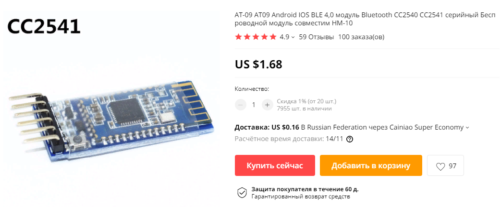
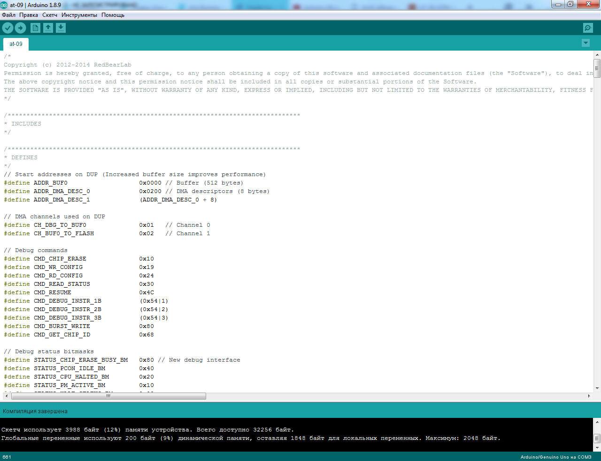
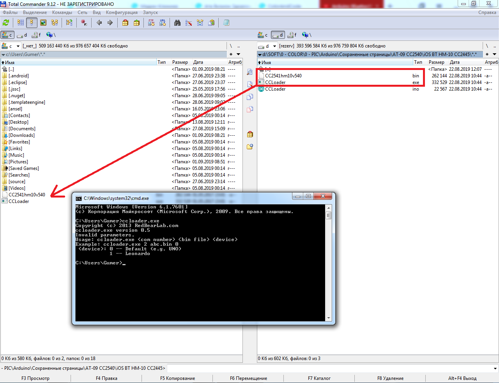
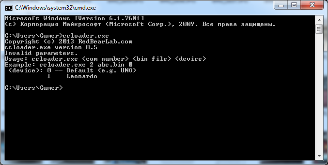
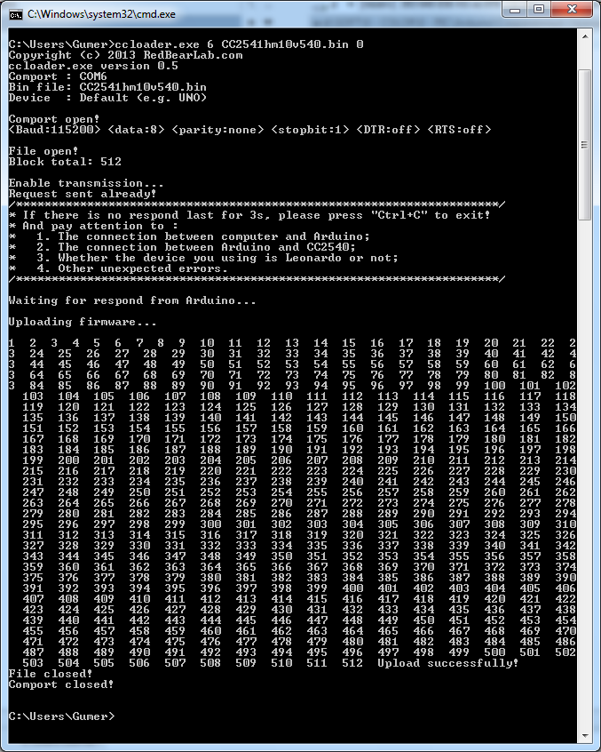
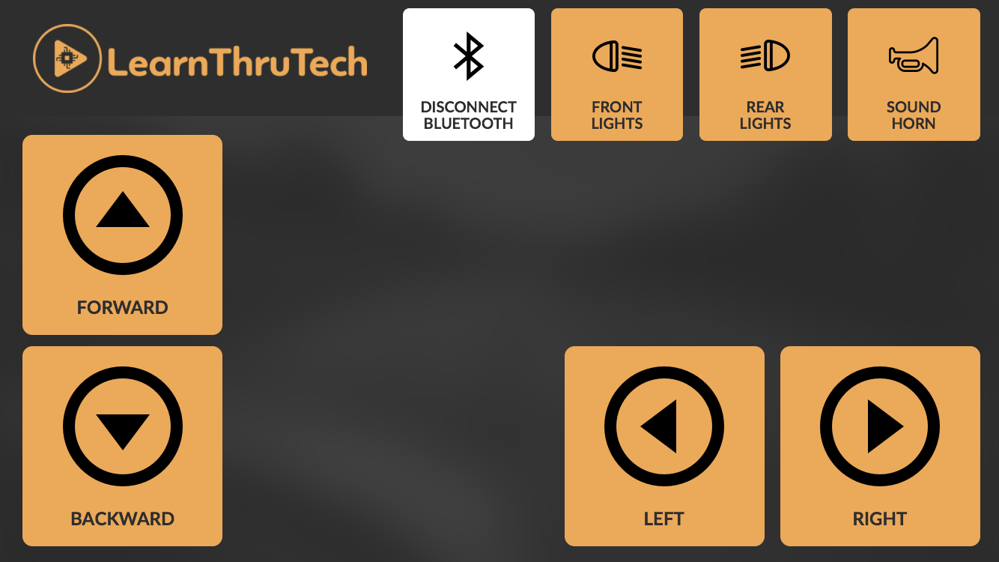
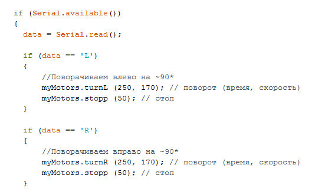

Приобрел на AliExpress модуль Bluetooth AT-09 с целью управления машинкой с iPhone 8.
|
 |
Модуль пришел "пустой". Пришлось потратить немало времени в поисках методики прошивки. По ходу работы делал фотографии. Программное обеспечение найдено в Интернете (на авторство не претендую)..
Рассмотрим поэтапно процесс прошивки.
В первую очередь необходимо подготовить сам модуль.
Срезаем защитную пленку
Подпаиваемся к следующим выводам (либо напрямую провода) - я же припаял срезанные ножки от разъемов
Использовал Arduino UNO и для удобства shield под имеющиеся провода (можно подключаться напрямую к Arduino).
Подключаемся к портам 4,5,6 (желтый, синий, зеленый) и питание (белый черный).


Модуль готов для прошивки.
Загрузить с сайта архив с необходимыми файлами iOS BT HM-10 CC2445
В архиве находится три файла:
CCLoader.ino - скетч для Arduino UNO
CCLoader.exe - программа для прошивки
CC2541hm10v540.bin - сама прошивка
Использовал Arduino IDE 1.8.9 (последняя версия на текущий период)
Пользуюсь Total Commander для удобства (можно использовать любые другие программы).
Для удобства (чтобы не переходить командами DOS по папкам) - скопировал необходимые файлы в начальную папку моей учетки
Для запуска командной строки необходимо нажать "Пуск" и набрать в поиске cmd.exe
Далее наберите наименование программы для прошивки CCLoader.exe
Программа выводит подсказку CCLoader.exe <COM порт к которому подключен Arduino> <файл прошивки> <устройство - в нашем случае UNO>
В моем случае Arduino UNO подключен к 6 COM порту. Набираем необходимые данные и ждем ....
Модуль готов к работе (мигает светодиод).
Хочу отметить, что сам телефон модуль не видит (в моем случае iPhone 8). Загружаем сторонний софт - сканируем и подключаемся. Например BLE Scanner - если нужно узнать параметры.
Для управления машинкой использовал следующую программу
Приведу фрагмент скетча
L - влево
R - вправо
F - вперед
B - назад
В заключении размещаю ссылку на страницу с прошивками jnhuamao.cn .
На этом краткий обзор завершаем.
�